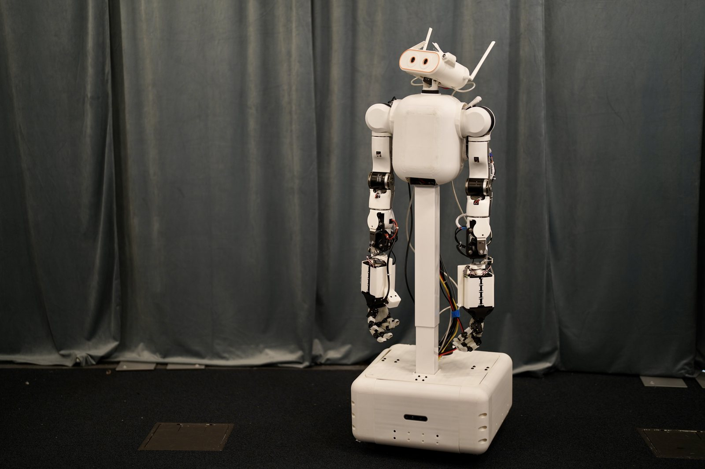

A whole-body robot you can actually build.
Mobile bimanual robots are becoming the platform for learning everyday, long-horizon manipulation, but open ones give up mobility, working height, dexterous hands or active gaze. MABEL keeps all of them: a fully open-source, 56-DOF platform (holonomic base, 0.635 m lift, torso, active head, two 7-DOF arms, two 17-DOF hands) from $8,056 in parts, with no machine shop. One Apple Vision Pro drives the whole body with no hand-held controllers: morphology-aware retargeting maps your head, wrists and fingers onto the robot's body frame, with arm-collision filtering and model-based limits on the base. On hardware: 82 ms LAN glass-to-glass latency and 18.2 mm return consistency.

v1.0 · as built · no renders
Cheap, dexterous, whole-body
From $8,056 in parts ($9,283 recommended). Two 17-DOF hands, two 7-DOF arms, a 3-DOF active head, and a holonomic swerve base — a 0–2.23 m fingertip band on a 0.49 m footprint. The only open platform that is holonomic, hand-dexterous, and neck-articulated under $10k.
Dexterity is normally where an open platform gives up. Hands get replaced by a parallel gripper, the neck gets bolted solid, the base gets two wheels and a caster. MABEL keeps all three and still lands under ten thousand dollars.
The swerve base is holonomic: it translates in any direction while the body keeps facing where the cameras are pointed, so the head never has to fight the wheels. The 3-DOF neck gives active perception — the robot looks where the task is instead of carrying a fixed camera and hoping.
Nothing needs a machine shop. Aluminium extrusion, laser-cut sheet metal, and printed parts, with the whole CAD tree open under CERN-OHL-S-2.0.
Modular by construction
Every subsystem is its own project on its own bus — swap an arm, a hand, the base, or the head without touching the rest. Extrusion + sheet metal; no machine shop; open CAD (CERN-OHL-S-2.0), firmware and software (Apache-2.0).
Every subsystem is its own project on its own bus, behind its own connector. An arm is a unit you unbolt and carry away; the hand is a separate unit again; the head, the neck, the lift, and the base are four more.
That is what makes the platform a research base rather than a demo: swap in your own hand and the whole-body controller keeps working, because the controller talks to the kinematic model, not to a specific gripper.
Build one subsystem at a time. The bill of materials is split the same way, so you can price an arm, a hand, or the base on its own.
Simulation-complete
A MuJoCo twin runs the production control code unmodified at 500 Hz across 35 released
environments. Same URDF, same ROS 2 interface — use_sim:=true is the only difference.
Most robot simulators are a second implementation — a different controller, a different URDF, a different set of bugs. Here the twin runs the production control code, unmodified.
One MuJoCo MJCF is the single source of truth. The ROS URDF, the web viewer's GLB, the iOS and Vision Pro rigs, and the controller's tip-over constants are all generated from it, so the simulated robot cannot silently drift away from the real one.
use_sim:=true is the entire difference between driving the twin and
driving the hardware — same wire protocol, same safety gate, same ROS 2 interface.
One integrated system
Teleop (Vision Pro, iPhone, browser), electronics and firmware, data collection, and training are one stack: every command passes one wire protocol and one whole-body QP — and every session is a training demonstration.
The parts that usually live in four separate repos are one stack here: teleoperation, electronics and firmware, data collection, and policy training.
Every command source — Vision Pro, iPhone, the browser studio, a gamepad, or Nav2 — is a client of the same wire protocol, and every one of them passes the same whole-body quadratic program before a single joint moves. There is exactly one gate, so a safety fix lands everywhere at once.
And because teleoperation and data collection share that path, every session you fly is already a training demonstration — no separate recording rig.